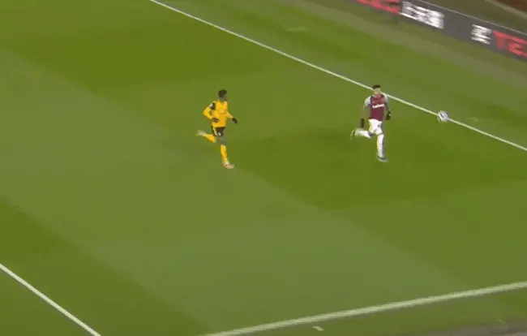
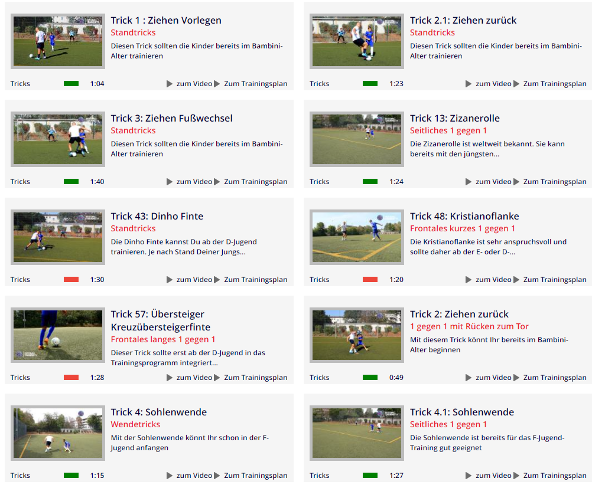
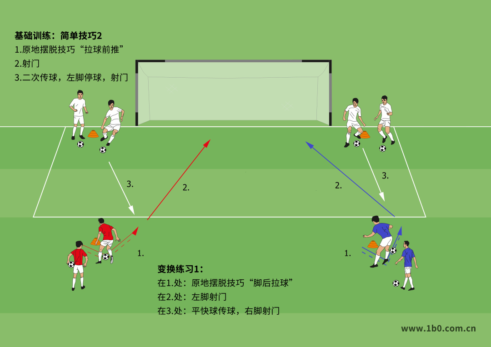
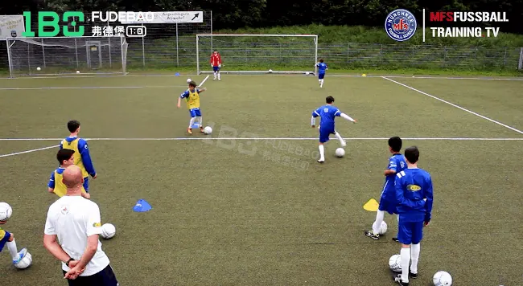
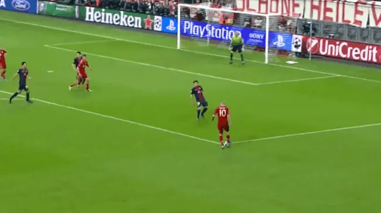
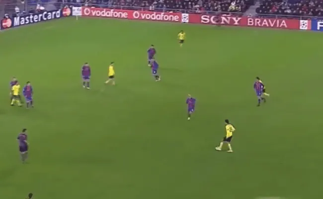
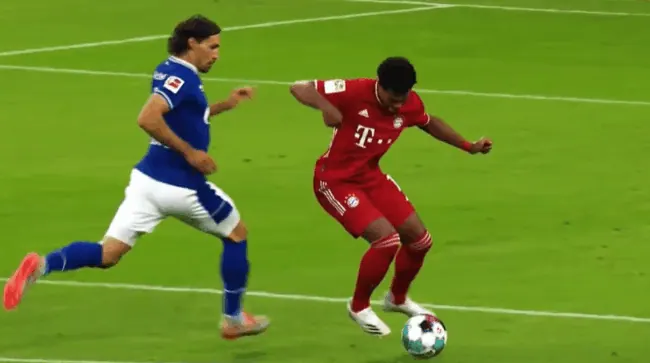

动作技巧，又可以称作过人假动作，是MFS整体训练中非常重要的一部分，这里我们将从训练和比赛两方面来说明，为什么要让孩子在训练中练习动作技巧。
动作技巧的训练意义
动作技巧对于训练的最大意义，在于可以激发孩子的兴趣和主观能动性。孩子们在电视上看到自己喜欢的球星做出的动作，他会觉得很帅，想要模仿。甚至在训练之外，孩子也会自发的练习。

没有人会觉得林皇这个动作不帅吧
因此我们要将孩子的自主性利用起来，引导他们正确的练习各种动作技巧。经过整理筛选规划，目前慕尼黑足球学校（以下简称MFS）准备了110多种不同的动作技巧，给不同年龄段和水平的孩子进行练习。

丰富的动作技巧可以动员不同的肌群，孩子们在练习动作技巧过程中，可以相对全面的发展全身各肌群的力量，身体协调性、动作速度会随之得到充分提高。同时因为动作技巧全部是有球练习，球员的球感、技术也能得到相应提升。
如此，我们可以培养出身体素质出色，同时技术细腻的球员。
以动作技巧为基础构建训练单元，会让孩子们充满热情，能够有效改善孩子（尤其是年龄比较小的孩子）在训练课上注意力不集中的情况。
学会一个动作技巧后，他们还会想着下一个，因此MFS强调要 在训练中不断教授孩子新的动作技巧，这样可以让孩子对足球和训练保持热情。
有时也可以安排孩子们在训练中进行 动作技巧的PK小游戏，进一步激发他们的积极性。这里有一个简单的训练单元可以参考：

不断学习新的技巧过程中，孩子们会逐渐找到自己适用的技巧，摸索出适合自己的踢法，相比我们国内原有的体工队训练模式，每个孩子都会形成不同的个性特点，这对孩子信心的建立有着重大意义。
熟练掌握某个过人技巧并应用出来，是孩子们炫耀的资本，这种炫耀可以展示给身边所有人，以获得父母教练的认可，队友乃至对手的信服。
我们还可以安排一些1对1训练，1对1总是攻方占有主动权的，孩子们运用技巧在1对1中完成过人射门，不断的成功会进一步帮助孩子建立自信，让他们全身心的投入，形成正向循环，从而变得更优秀。
PS：这也是MFS绝大部分训练单元中都要安排射门环节的原因之一。

动作技巧的比赛意义
最后，在说一说动作技巧的比赛意义。
里贝里、罗本这样的球员对球队的帮助是显而易见的，不断的1对1可以有效的给对手防守施加压力。

罗本里贝里这样的球员会在边路寻求1对1的机会，冲击对手防线
想成为这样的球员，动作技巧的练习不可或缺，当球员掌握足够多的技巧后，他才能从容的选择结合比赛场景最合理的过人技巧、最适合自己的技巧，有效提升1对1成功率，这些可不是我们野球场上学个三五招就能成的。
再有，所有的动作技巧，即便是简单的动作技巧，大多都能起到调整身体朝向或者变换节奏的作用，在场上运用出来，便可以获得更多的出球或射门空间，这可以帮助我们完成一脚漂亮的横穿转移或者射门得分。

布斯克茨利用简单的“拉球前推”动作调整身体朝向打开空间，完成一脚漂亮的横穿转移

格纳布里使用“假传转身”后获得起脚射门空间
布斯克茨、基米希、克罗斯、莫德里奇这样的中场大师运用简单的变向转身技巧调整身体朝向，甚至能够起到迅速变换整体进攻方向的作用，从而调动对方防线。
总结一下，动作技巧的练习能提升孩子的积极性，能提升孩子身体协调性与球感，能帮助孩子建立自信心，在最终的比赛中还能发挥不俗的效果。
以上
Ps：大家如果对我们的训练视频有任何问题，都可以私信或者在评论区提出，我们都会尽力解答的

文字与图片版权归各自权利人所有；排版根据抓取内容整理。